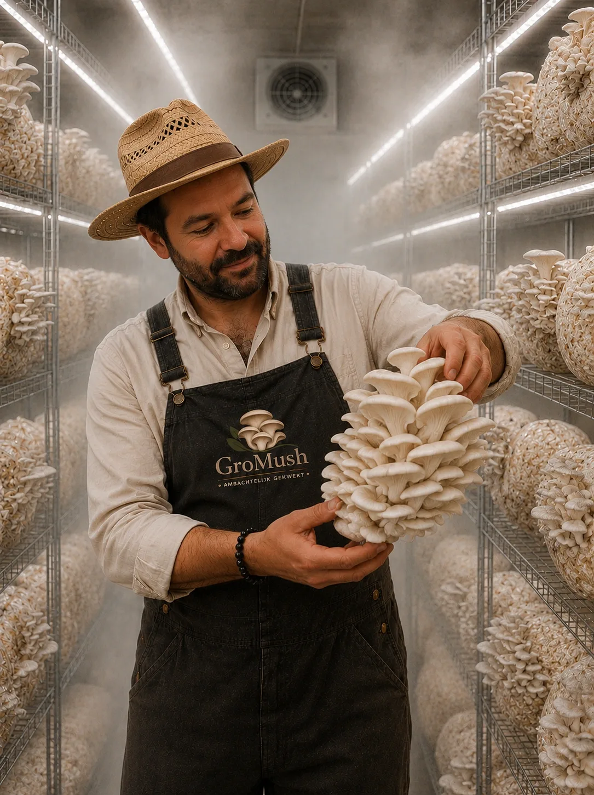
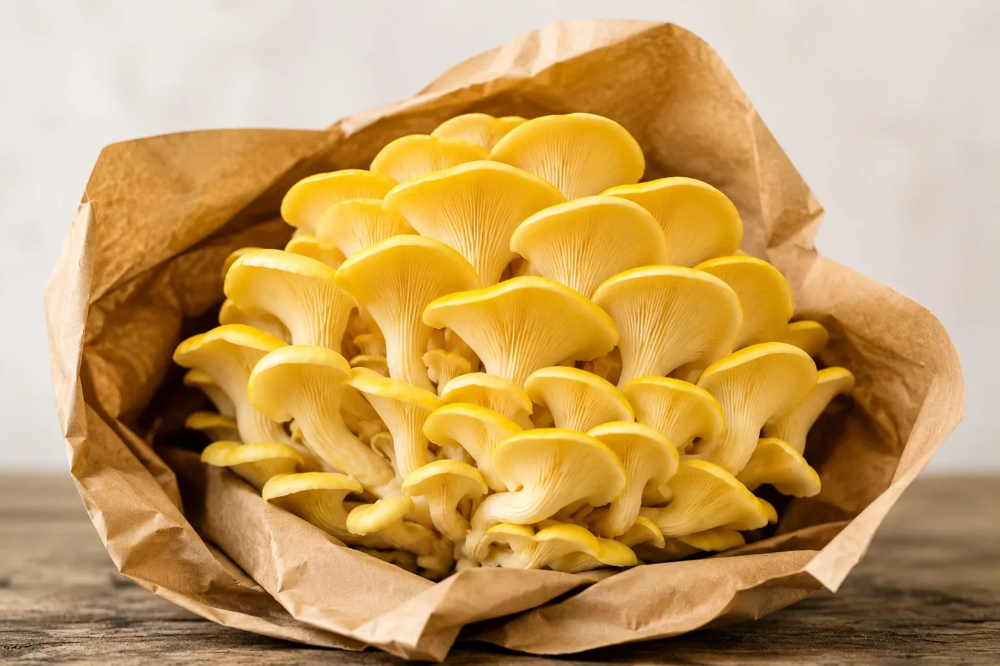
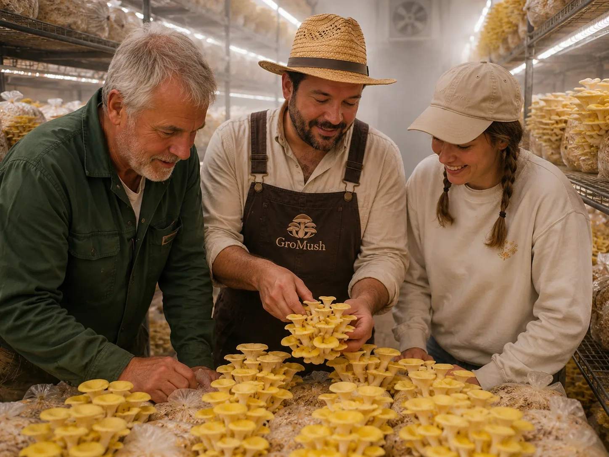
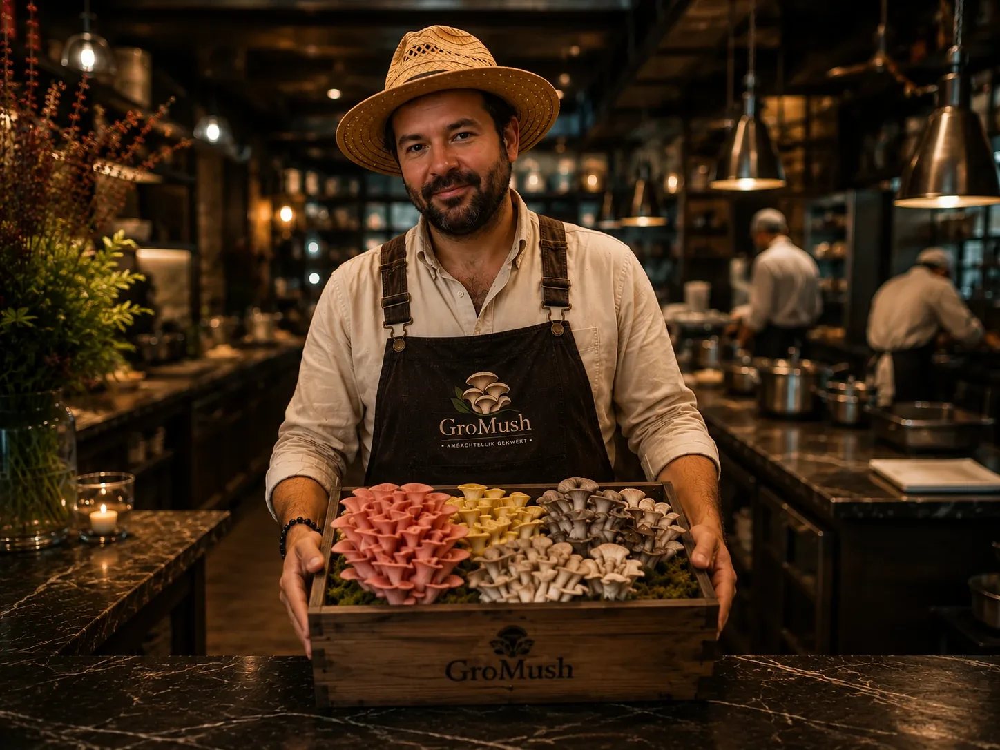

Meer dan een paddenstoelenkwekerij.
Bij GroMush geloven we dat uitzonderlijke paddenstoelen beginnen met passie, vakmanschap en respect voor de natuur.
En met een kweker die net iets té graag over mycelium vertelt. Aangenaam, wij zijn GroMush.
Lees ons verhaal Zeg hallo


Ambachtelijk & lokaal
Wij kweken ambachtelijke paddenstoelen op kleine schaal, met de focus op kwaliteit, smaak en duurzaamheid. Elke oogst volgen we met zorg op, zodat je steeds kunt rekenen op verse producten van topkwaliteit.
Maar GroMush is veel meer dan een kwekerij. Wij willen een partner zijn voor chefs, winkels, bedrijven, scholen én particulieren. Voor iedereen die vindt dat eten beter smaakt als het van dichtbij komt.
Ontdek onze soorten
De beste ingrediënten beginnen bij de producent
Wij leveren dagverse paddenstoelen rechtstreeks aan restaurants, hotels en traiteurs — en net zo graag aan de hobbykok om de hoek.
Wat mag je verwachten?
- Wekelijkse leveringen
- Constante kwaliteit
- Lokale productie
- Speciale soorten
- Teelt op bestelling
- Flexibele volumes
- Persoonlijk contact
GroMush levert aan
- Restaurants
- Grootkeukens
- Groentewinkels
- Hoevewinkels
- Delicatessenzaken
- Biozaken
- Slagers
- Bakkers

Het begon met een fascinatie
Sommige ondernemers starten een bedrijf omdat ze een gat in de markt zien. Bij mij begon het anders.
Al jarenlang ben ik geboeid door de verborgen wereld van schimmels en mycelium. Wat voor velen onzichtbaar blijft, vormt één van de meest indrukwekkende organismen op aarde.
Mycelium verbindt, groeit, breekt af, bouwt opnieuw op — en vormt zo de basis van gezonde ecosystemen.
Hoe meer ik mij erin verdiepte, hoe duidelijker het werd dat paddenstoelen veel meer zijn dan een ingrediënt. Ze vormen een perfecte combinatie van natuur, wetenschap, duurzaamheid en gastronomie.
Uit die passie is GroMush ontstaan.
Geen voedselkilometers, wel smaak
Veel bijzondere paddenstoelen leggen honderden of zelfs duizenden kilometers af voordat ze op een bord terechtkomen. Bij GroMush kweken we lokaal, met korte transportafstanden en maximale versheid. Zo behouden de paddenstoelen hun smaak, textuur en kwaliteit — en beperken we tegelijk de ecologische impact.
Iedere oogst wordt met zorg gecontroleerd en pas geleverd wanneer ze perfect op smaak is. Ons bestelwagentje hoeft daarvoor nooit ver te rijden: van de kwekerij tot in jouw keuken is het hooguit een half uurtje.
Wij zetten geen dozen af. Wij werken samen.
Iedere klant is anders, en net daarin ligt de kracht van GroMush. Wij werken graag samen met…
-
Chefs
die op zoek zijn naar inspiratie en soorten die de kaart verrassen.
-
Winkels
die lokale producten een podium willen geven.
-
Scholen
die kinderen laten kennismaken met de fascinerende wereld van schimmels.
-
Bedrijven
die kiezen voor duurzame partners in hun keten.
-
Thuiskoks
die thuis willen experimenteren met verse oesterzwammen.
Mijn droom is eenvoudig: het verschil maken op ieders bord. Of dat nu een verfijnd gerecht is in een sterrenrestaurant, een lunch in een bedrijfsrestaurant, een maaltijd in een woonzorgcentrum of een gezin dat thuis samen eet.
GroMush is mijn passie
GroMush is geen toevallig project. Het is het resultaat van maanden onderzoek, gesprekken met chefs, bezoeken aan kwekerijen en een voortdurende drang om bij te leren. Ik geloof in vakmanschap boven massaproductie. In kwaliteit boven kwantiteit. In samenwerking boven verkoop. En vooral in de kracht van lokaal ondernemen.
Waar passie groeit, smaak bloeit en lokaal het verschil maakt.Proef het zelf — gratis Kom eens langs